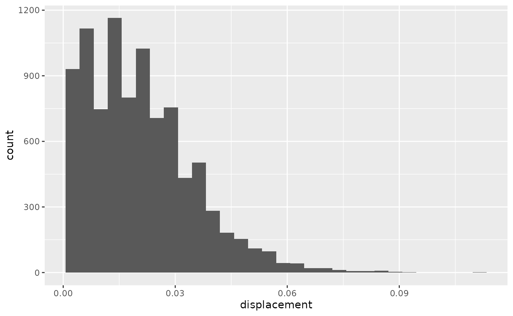

library(animovement)
library(tibble)
library(dplyr, warn.conflicts = FALSE)
library(readxl)
library(here)
#> here() starts at /home/runner/work/animovement/animovement
here::i_am("vignettes/articles/clean-tracks.Rmd")
#> here() starts at /home/runner/work/animovement/animovementThe next step in our workflow is to clean the tracks. This step commonly covers three separate components:
Although these are not always completely separate steps in practice, we will treat them as such to ensure the integrity of our tracks.
Outlier detection
If you are confident that your sensors give correct readings, you can skip this step.. Even in a typical trackball setup with optical flow sensors (e.g. computer mice), there is a chance that we will get a few spurious readings from the sensors. The aim of this step is to root out those readings.
We’ll use the data we read in the Read
data article, so if you’ve missed that step you need to revisit how
to read data. Let us first visualise our dx and
dy values.
library(ggplot2)
df <- df |>
mutate(displacement = sqrt(dx^2 + dy^2))
full_trace <- df |>
ggplot(aes(time, displacement)) +
geom_line() +
xlab("Time (s)") +
ylab("dx, dy (dots)")
partial_trace <- df |>
filter(time < 20) |>
ggplot(aes(time, displacement)) +
geom_line() +
xlab("Time (s)") +
ylab("dx, dy (dots)")
hist_dist <- df |>
ggplot(aes(displacement)) +
geom_histogram()
library(patchwork)
full_trace / partial_trace / hist_dist
#> `stat_bin()` using `bins = 30`. Pick better value with `binwidth`.Some animals spend a significant amount of time sitting still (as was the case here). To ensure that these zero-readings do not skew our outlier detection, let’s filter them out and have another look at the histograms.
hist_dist2 <- df |>
filter(displacement != 0) |>
ggplot(aes(displacement)) +
geom_histogram()
hist_dist2
#> `stat_bin()` using `bins = 30`. Pick better value with `binwidth`.
Now we can see that there might be a few observations with extreme observations. It is now up to each researcher to decide whether to attempt filtering out outliers, or whether we are happy with what we have.
we may want to filter out all the 0 readings At first
sight, it all looks fine. We could stop here and say we’re confident
there are no spurious outliers. We could also apply a variety
of automated outlier detection techniques. There are several ways of
achieving this, but luckily the performance
package has got us covered with their check_outliers() function. Since most of these
methods rely on histograms/probability density functions,
Smoothing
All there is left to do is smooth our tracks, which is done using the
smooth_tracks() function. The smoothing itself is super
simple. smooth_tracks() provides a few different
options:
roll_meanroll_median-
SOON
savitsky_golay
For the rolling filters you can provide the
window_width, i.e. how many observations to use in the
rolling filter. The filters result in some NA values at the
beginning and end of your data.
An important point about smooth_tracks() is that,
instead of using our x and y values, it first
back-transforms into the raw values obtained from your sensors (which
are effectively “differences” between coordinates, so dx
and dy) and performs the smoothing on them, before finally
converting back to x and y. This may seem
strange if you have previously worked with tracking data from computer
vision or GPS loggers. However, whereas those modalities would return to
the “true” coordinates after an outlier, mouse sensors do not. So the
only way we can identify rogue values is by filtering those raw
values.
Let’s try smoothing our data with a rolling_mean filter
with 0.5 second (30 observations at at a sampling rate of 60Hz) window
width. Notice that we can use group_by with our metadata
for a tidyverse-friendly workflow.
df_smooth <- df |>
group_by(id, date) |> # We can use group_by with our metadata for a tidyverse-friendly workflow
smooth_track(method = "rolling_median", window_width = 5)Let’s visualise how they compare. Note that although the difference may seem negligible when plotting paths, they may become important when computing derivatives such as velocity and acceleration.
library(ggplot2)
ggplot() +
geom_path(data = df, aes(x,y), colour = "red") +
geom_path(data = df_smooth, aes(x,y), colour = "blue") +
facet_grid(rows = vars(id),
cols = vars(date)) #Remember to use facet_grid when visualising multiple experiments
#> Warning: Removed 5 rows containing missing values or values outside the scale range
#> (`geom_path()`).Not that different as the sensors are doing a good job! But we can see that the smoothed track end a bit further to the left than the raw version.